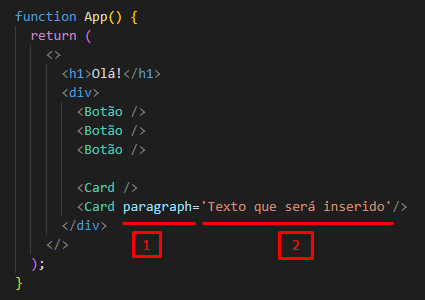
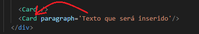
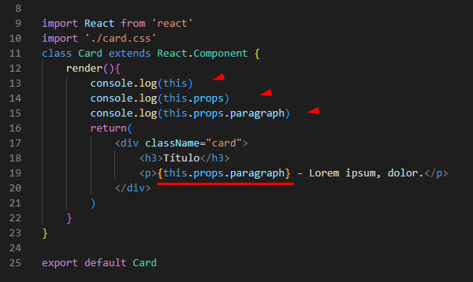
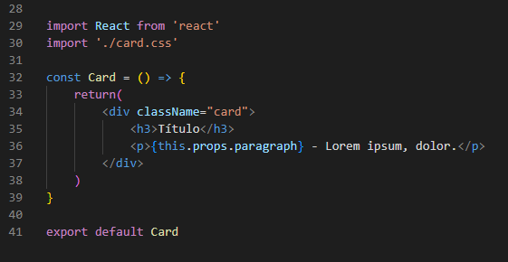
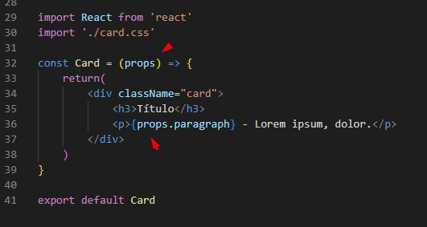
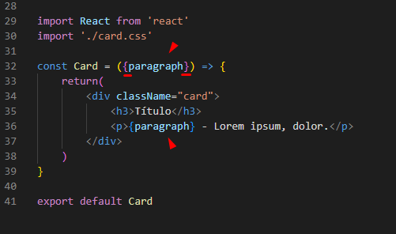

Props - Props são propriedades que são passadas para os componentes.
Adicionando um texto específico num componente apartir do uso de PROPS:
- propriedade='Valor' >>> Definindo a PROP:

- >>> Acessando o componente onde a prop foi inserida:

- this; this.props; this.props.paragraph; >>> Verificando onde está a nova PROP.
Adicionando a nova PROP no componente.
OBS: ENTRE CHAVES. Precisa das chaves pra informar que é um código JS.

Add texto usando PROPS - Segunda Forma:
- Mesmo componente anterior escrito usando Frunções:

- OBS: Não existe 'this' numa função:

1 - Informe um novo parâmetro pra Arrow Function.
2 - Remova o this.
- SHORTHAND NOTATION:

1 - Colocar DENTRO DE CHAVES o novo parâmetro da Arrow Function.
2 - Substituir o nome do primeiro objeto pelo nome do objeto que quer estilizar - Substituí o 'props' pelo próprio 'paragraph' (que é a propriedade que vai ser inserida no componente).
3 - Despreza o uso do props. restando apenas a própria propriedade que vai ser inserida no componente.